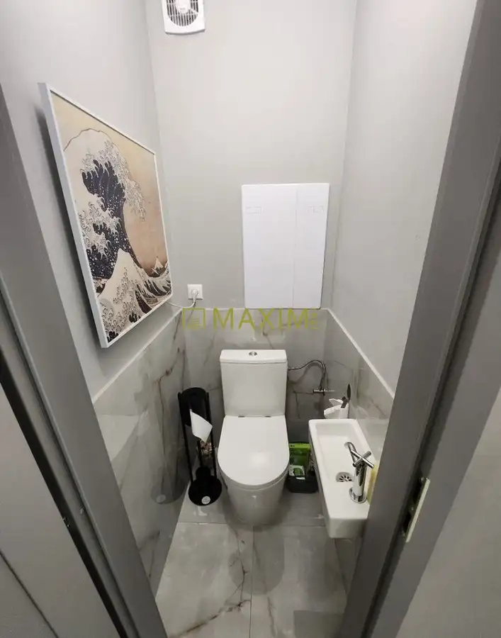
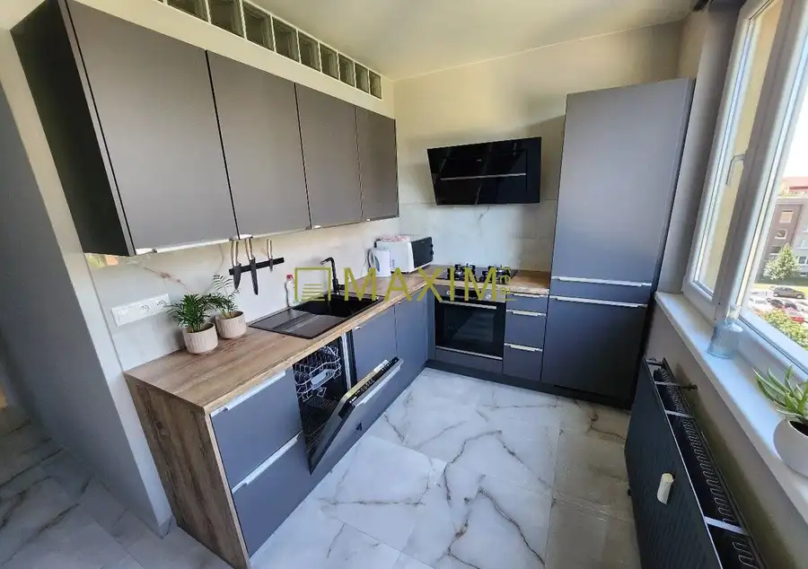
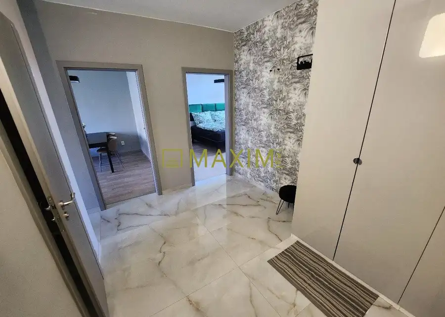
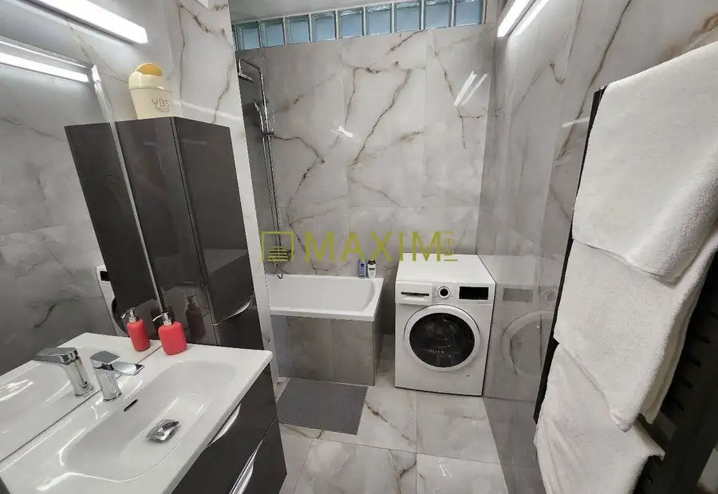
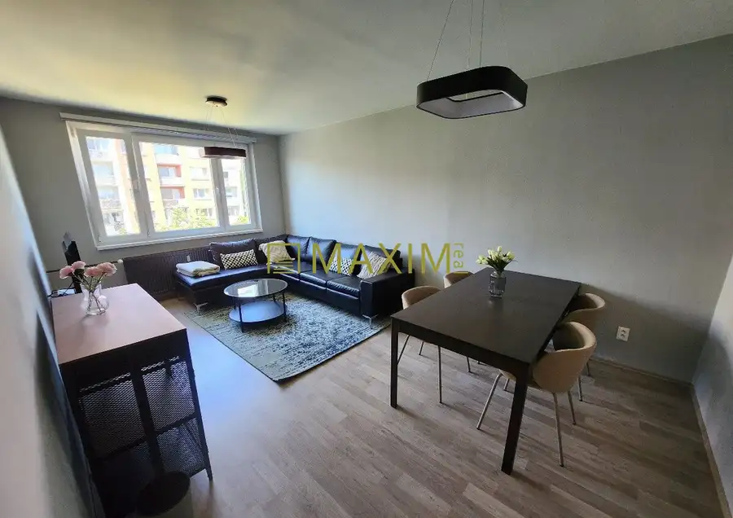
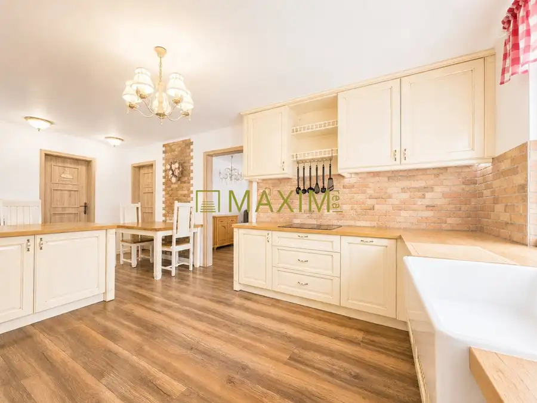
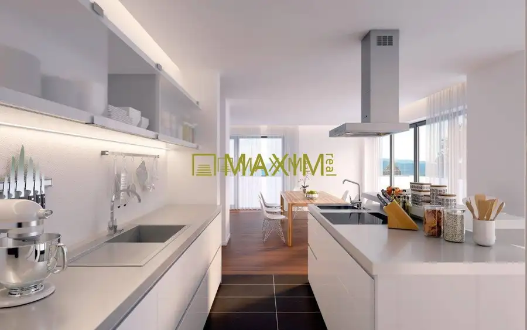
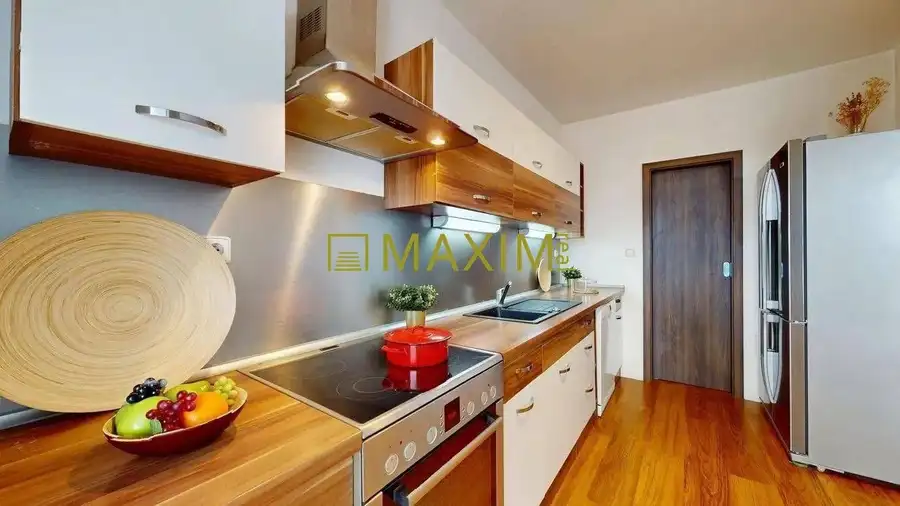

2- izbový byt na Bernolákovej ulici v Senci
Senec





- Dispozícia2-izbový
- Plocha62.5 m²
- Poschodie2. z 8
- StavČiastočná rekonštrukcia
- VlastníctvoOsobné
O nehnuteľnosti
Ponúkame na predaj priestranný 2-izbový byt so samostatnou kuchyňou na Bernolákovej ulici v centre Senca. Byt s výmerou 62,5 m² prešiel v roku 2021 kompletnou rekonštrukciou až po betón, vďaka čomu ponúka moderné a komfortné bývanie bez potreby ďalších väčších investícií.Dispozične pozostáva z dvoch samostatných izieb, samostatnej kuchyne, kúpeľne s vaňou, oddeleného WC a vstupnej chodby. K bytu prislúcha balkón a vlastná pivničná kobka, ktoré poskytujú ďalší praktický priestor.Rekonštrukcia zahŕňala kompletnú výmenu elektroinštalácie, vybudovanie nového bytového jadra, vyrovnanie podláh, nové stierky a maľovky. V byte sú položené veľkoformátové dlažby v elegantnom mramorovom vzhľade, v izbách laminátové podlahy. Súčasťou rekonštrukcie boli aj nové interiérové dvere, vstavané skrine a moderná kuchynská linka so vstavanými spotrebičmi značky Bosch.Byt sa predáva zariadený, pričom nábytok a spotrebiče z fotografií zostávajú súčasťou predaja. Nový majiteľ tak môže bývanie využívať bez nutnosti okamžitého zariaďovania.Bytový dom je zateplený a disponuje výťahom. Veľkou výhodou je samotná lokalita – centrum Senca ponúka kompletnú občiansku vybavenosť v pešej dostupnosti, vrátane obchodov, reštaurácií, škôl a zastávok dopravy. Obľúbené Slnečné jazerá aj Bratislava sú jednoducho dostupné.Byt je vhodnou voľbou na vlastné bývanie aj ako investícia na prenájom.Byt je voľný od 1. 1. 2027.Cena nehnuteľnosti je 195.000,-Eur a bude k nej pripočítaná sprostredkovateľská odmena vo výške 5.000,- Eur, v ktorej sú zahrnuté aj všetky poplatky, právny a hypotekárny servis. Cena nehnuteľnosti so sprostredkovateľskou odmenou je spolu 200.000,-Eur celkom.Kontakt: Michal Šuchter, suchter@maximreal.sk, tel.: 0915 711 109Prečo kúpiť tento byt: - Kúpou získavate dobre dispozične riešenie nehnuteľnosti- Komfortne, rýchlo a na pešo dostupnosť všetkých služieb a zastávky MHDPrečo kupovať nehnuteľnosť prostredníctvom realitnej kancelárie Maxim Real?- Cena nehnuteľnosti je pre Vás konečná - neplatíte žiadne poplatky spojené s predajom a prevodom nehnuteľnosti.- Okrem bezplatného advokátskeho servisu, spracovania kúpno-predajných zmlúv , spracovania návrhu na vklad do katastra, hradíme tiež poplatky za podanie návrhu na vklad do katastra, správne poplatky za výpis z listu vlastníctva a poplatky za podpisy na kúpnych zmluvách.- K dispozícii je Vám hypotekárny špecialista, ktorý pohodlne zariadi Vašu hypotéku a vo väčšine prípadov dojednáva výhodnejšie podmienky, ako keď si klient hypotéku vybavuje sám. Jeho služby sú pre Vás zdarma a navyše máte v tomto prípade aj znalecký posudok zdarma.- Kompletný servis máte vyriešený pohodlne a bezpečne
Parametre
- Cena vrátane energií
- Nie
- Druh
- 2 izbový byt
- Dátum zverejnenia
- 05. 10. 2026
- Energetický certifikát budovy
- nie je
- Podlažie
- 2
- Počet nadzemných podlaží
- 8
- Rok výstavby
- 2026
- Stav nehnuteľnosti
- Čiastočná rekonštrukcia
- Typ
- Predaj
- Typ konštrukcie
- Iná
- Umiestnenie
- Ďalšie nadzemné podlažie
- Vlastníctvo
- Osobné
- Úžitková plocha
- 62.5 m²
Kde to je


Mohlo by Vás zaujímať

BytNové 265 000 €Ponúkame na predaj 4-izbový byt v Šamoríne Šamorín 4-izbový79.3 m²1. podlažie
BytNové Cena na vyžádáníPre klienta hľadáme 2-izbový byt v Podunajských Biskupiciach Podunajské Biskupice, Bratislava 2-izbový
BytNové Cena na vyžádáníVeľký, slnečný a priestranný 3-izbový byt Podunajské Biskupice, Bratislava 3-izbový103.5 m²4. podlažie